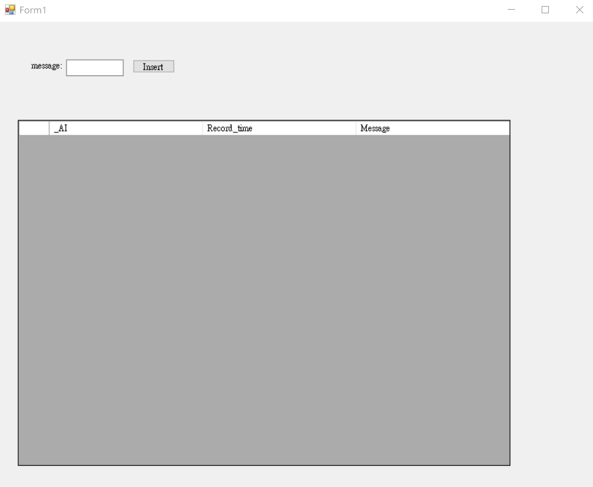

實踐大學聯網感測實作
開發環境This project is maintained by yazelin
滴水穿石，不是水多厲害，更不是石頭不厲害，而是時間太厲害。

// including the MySQL Library
using MySql.Data.MySqlClient;
//在public partial class Form1 : Form { } 中加入下面2個宣告
String Record_time;//紀錄資料加入的時間
//連線參數
//資料來源:本機localhost
//port:3306
//選擇某個資料庫:test_log
//使用者名稱:root，密碼：無
//建立MySQL連結參數
MySqlConnection connection = new MySqlConnection("datasource=localhost;port=3306;Initial Catalog='test_log';username=root;password=");
}
//當視窗載入時觸發
private void Form1_Load(object sender, EventArgs e)
{ //連結MySQL
connection.Open();
Select_test_alarm_MySQL();//查詢test_alarm資料表的方法
} // 查詢test_alarm資料表的方法
private void Select_test_alarm_MySQL()
{
//load mysql data of test_sensor to dataGridView
//查詢test_sensor資料表的select語法
string select_test_sensor_Query = "SELECT * FROM test_alarm ORDER BY _AI DESC LIMIT 15";
//在記憶體建立新的test_sensor_table空白表格
DataTable test_sensor_table = new DataTable();
//MySqlDataAdapter類別用connection去查詢MySQL的資料
MySqlDataAdapter test_sensor_adapter = new MySqlDataAdapter(select_test_sensor_Query, connection);
//查詢後的test_sensor_adapter填入test_sensor_table
test_sensor_adapter.Fill(test_sensor_table);
//test_sensor_table顯示在dataGridView.DataSource
test_dataGridView.DataSource = test_sensor_table;
//dataGridView欄位依照內容長短調整欄寬
test_dataGridView.AutoSizeColumnsMode = DataGridViewAutoSizeColumnsMode.Fill;
} //按下Insert按鈕時觸發
private void insertbtn_Click(object sender, EventArgs e)
{
//將現在系統時間DateTime.Now傳回Record_time紀錄
Record_time = String.Format("{0:yyyy/MM/dd HH:mm:ss}", DateTime.Now);
//新增語法:新增"現在時間"與"message_textBox"至test_log資料庫的test_sensor資料表
string insertQuery = "INSERT INTO test_log.test_alarm(Record_time,Message) VALUES('" + Record_time+"','" + message_textBox.Text+"')";
//MySqlCommand類別用connection去新增至command
MySqlCommand command = new MySqlCommand(insertQuery, connection);
try
{ //ExecuteNonQuery()用來創建或修改資料庫的結構,如建立資料表,成功回1,失敗回0
if (command.ExecuteNonQuery() == 1)
{
MessageBox.Show("Data Inserted");
}
else
{
MessageBox.Show("Data Not Inserted");
}
}
catch(Exception ex)
{
MessageBox.Show(ex.Message);
}
//load mysql data of test_sensor to dataGridView
//查詢test_sensor資料表的select語法
string select_test_sensor_Query = "SELECT * FROM test_alarm ORDER BY _AI DESC LIMIT 15";
//在記憶體建立新的test_sensor_table空白表格
DataTable test_sensor_table = new DataTable();
//MySqlDataAdapter類別用connection去查詢MySQL的資料
MySqlDataAdapter test_sensor_adapter = new MySqlDataAdapter(select_test_sensor_Query, connection);
//查詢後的test_sensor_adapter填入test_sensor_table
test_sensor_adapter.Fill(test_sensor_table);
//test_sensor_table顯示在dataGridView.DataSource
test_dataGridView.DataSource = test_sensor_table;
//dataGridView欄位依照內容長短調整欄寬
test_dataGridView.AutoSizeColumnsMode = DataGridViewAutoSizeColumnsMode.Fill;
}
//當視窗關閉時
private void Form1_FormClosing(object sender, FormClosingEventArgs e)
{
connection.Close(); //與MySQL斷線
}